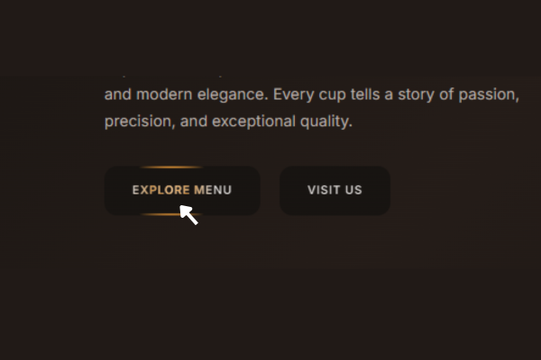

BrewMaster Coffee Landing Page
An elegant and sophisticated landing page for a premium coffee brand, featuring a unique interactive mouse-tracking glow effect on its buttons.
Project Overview
Elegant & Warm UI
A refined design that uses the classic 'Playfair Display' font and a warm, dark color palette to create an inviting and luxurious atmosphere.
Highly Interactive
The user experience is enhanced with a unique mouse-tracking glow effect on buttons, making interactions feel dynamic and engaging.
Perfectly Responsive
A seamless experience across all devices, with a responsive grid layout for the menu and an intuitive full-screen mobile navigation.
Key Features

"Dynamic Mouse-Tracking Buttons"
The call-to-action buttons feature a unique glow effect that tracks the user's mouse movement in real-time, creating a visually stunning highlight.
.png)
"Elegant & Inviting Hero Section"
A clean, two-column hero layout that combines elegant typography with interactive buttons to create a strong, premium first impression.
.png)
"Clean & Responsive Menu Layout"
The menu is presented in a clean, responsive grid that automatically adjusts to fit any screen size, making it easy to browse on all devices.
.png)
"Refined Typographic Style"
The combination of the serif 'Playfair Display' for titles and the sans-serif 'Inter' for body text gives the site a timeless, high-end feel.
Technical Implementation
CSS Variables for Mouse Tracking
The glow is achieved by JS updating CSS Custom Properties (`--x`, `--y`) on every mouse movement, which then controls a radial gradient in the CSS.
Dynamic Hue Shifting
The glow's color subtly shifts as the mouse moves. This is done by using the mouse's percentage-based position (`--xp`) to calculate the `hsl()` hue in CSS.
Modern CSS Grid Layouts
The entire site structure is built with modern, flexible CSS Grid, ensuring robust and responsive layouts for all sections.
Full-Screen Mobile Navigation
On smaller screens, the navigation transforms into an elegant, full-screen overlay with a clean hamburger-to-X animation.
Custom Themed Scrollbar
Even the scrollbar is styled to match the website's dark, elegant theme, showing a high level of attention to detail.
Vanilla JavaScript
All interactivity is handled with clean, efficient, dependency-free vanilla JavaScript, focusing on performance and maintainability.
Design & Development Details
Color Scheme: A sophisticated dark theme (hsl(25 15% 8%)) with a warm, golden-orange accent (hsl(30 80% 60%)).
Layout: A classic and clean layout system built with CSS Grid for all major sections.
Animations: Focused on a single, high-impact interactive feature (the mouse-glow) combined with subtle hover effects.
Skills Demonstrated: Advanced CSS/JS Interactivity, UI/UX Design, Responsive Layouts (CSS Grid), Custom Properties (CSS Variables).
Time taken to build: Perfecting the unique mouse-tracking effect is key; I estimate this project would take 20-25 hours.
Pricing: For a custom-built site with this level of polish and unique interactivity, my personal pricing would be in the $110 - $190 range.